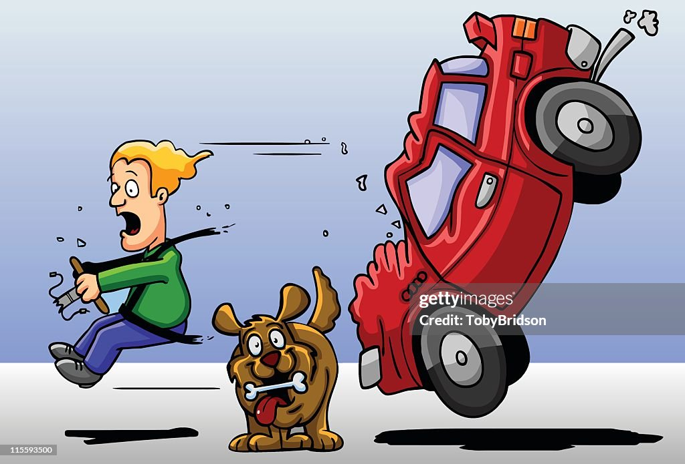
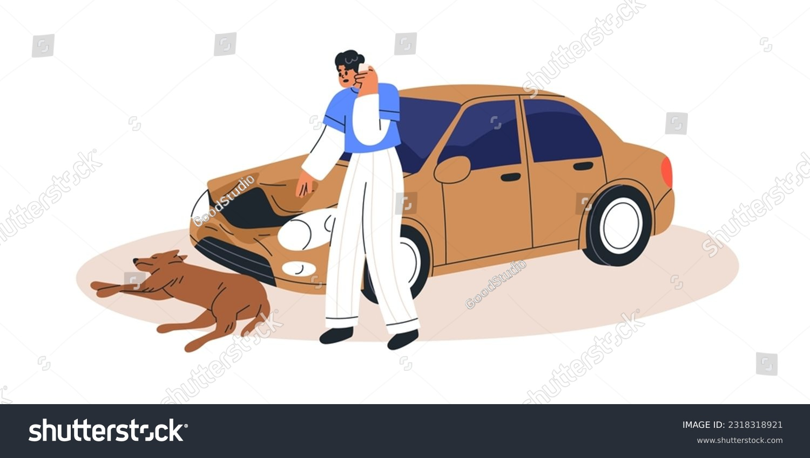

Scenario 2: Brake Failure and Animal Obstruction
Setting:You're in your autonomous vehicle, casually scrolling through your playlist, while the dashboard shows you're about 20 minutes away from reaching your destination. Out of nowhere, a series of alarms sound off, and your dashboard displays: "Brake failure detected. Animal obstruction ahead. Immediate decision required."
Options for Action:
- Alert You:Attempt to Dodge the Animal The vehicle can try to swerve around the animal, utilizing the car's remaining momentum control systems since the brakes have failed. While this action could save the animal's life, it comes with the potential hazard of losing control and veering off the road, putting you at significant risk of injury or worse.
- Risk: Option 1 Swerving at high speeds, especially without brake control, can result in losing control of the vehicle, potentially causing a rollover or collision with other objects or vehicles, which could result in severe injury or death for you.
- Disable Connectivity:Continue Straight Path Alternatively, the vehicle can maintain its current trajectory, which would unfortunately result in hitting the animal. This choice reduces your personal risk given the brake failure but would likely result in the death of the animal and possibly damage to your vehicle.
- Risk: Option 2 Striking the animal could cause significant damage to your vehicle and potentially even disable it, leaving you stranded. Depending on the size and type of animal, there is also a risk that the impact could compromise the vehicle's safety features, increasing your risk of injury.

